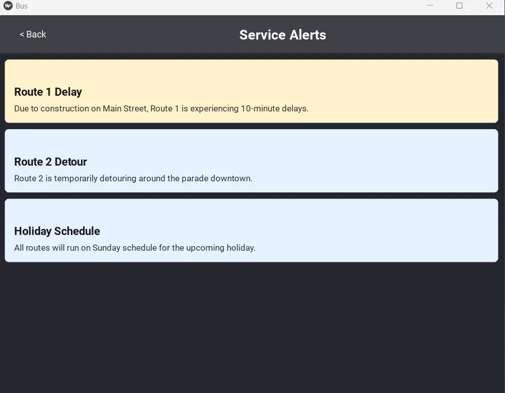
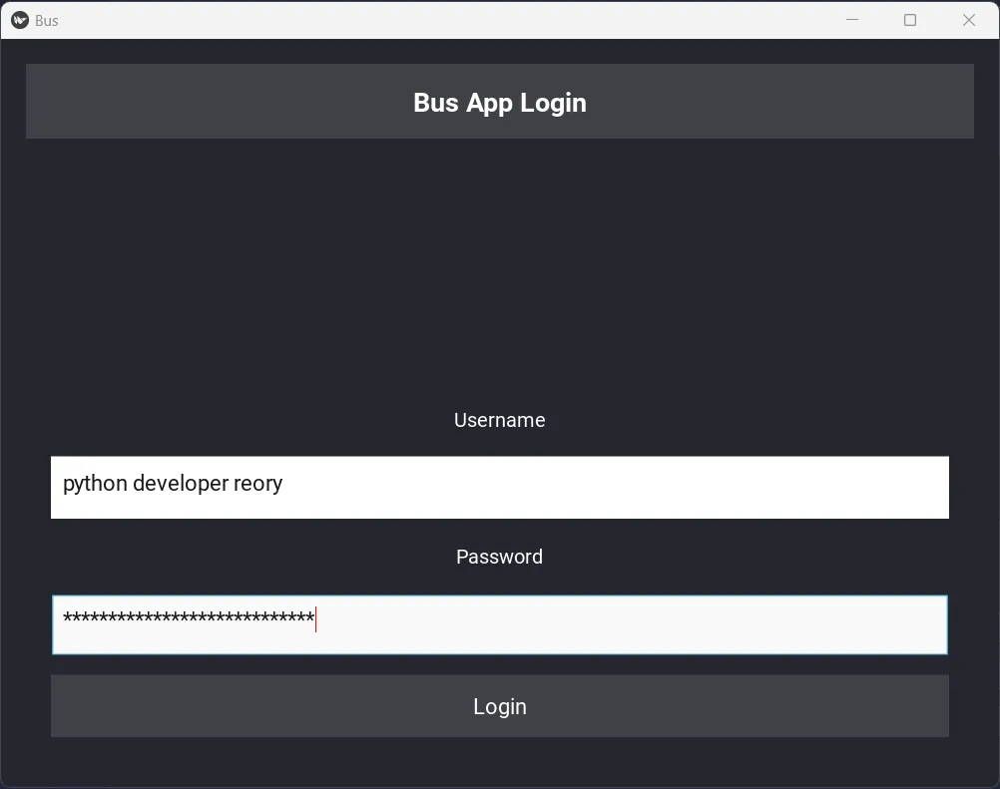
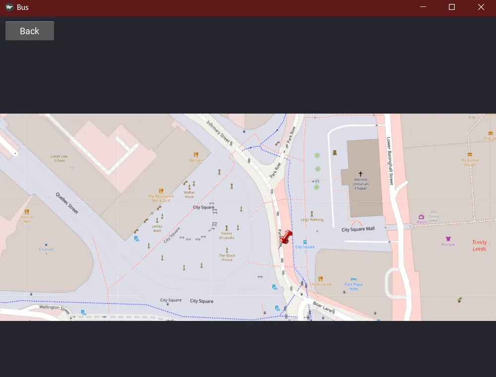
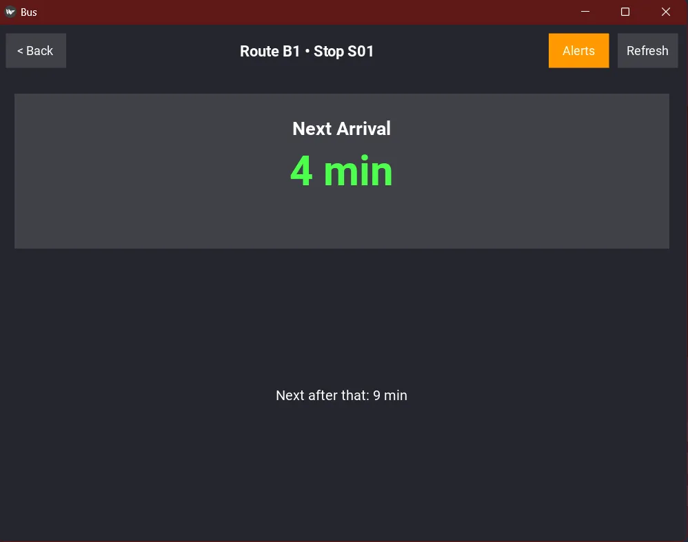
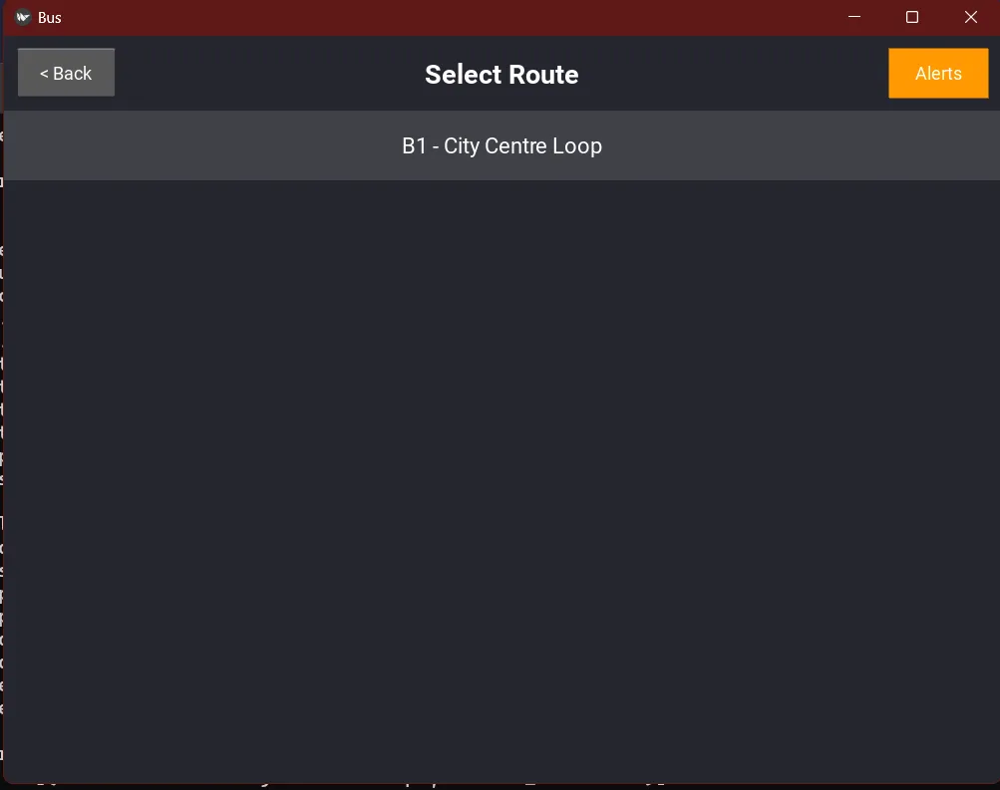
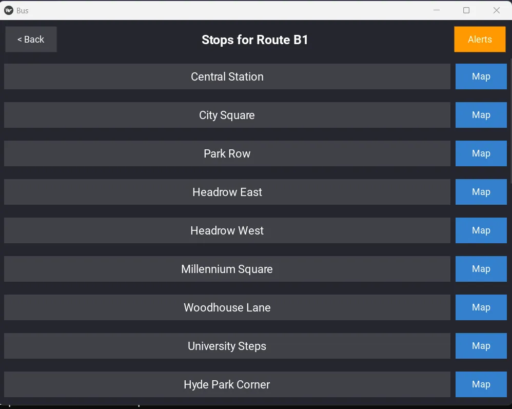

Bus App


A full-stack transit app featuring a Django REST framework and a Multi-threaded Kivy mobile interface.
A Reliable transit apps require robust front-end logic. I built this UK Bus Tracker (v1) as a Proof of Concept to demonstrate a mobile-ready UI (Kivy) capable of processing transit data. To ensure a consistent demo experience without API rate-limiting, v1 utilizes a mocked data engine that simulates real-world bus arrivals.
📱 App Gallery






🚀 Features
- 17/17 Passing Unit Tests✅
- Mocked Time - (Proof of concept)
- Multi-threaded Kivy UI
- Django REST Framework Backend (Scalable app structure)
📦 Installation
- Clone the repository and install:
git clone https://github.com/reory/bus_app.git
cd bus_app
pip install -r requirements.txt
python manage.py migrate
Usage
This project requires both the backend and frontend to be running simultaneously.
Start the backend:
python manage.py runserverStart the frontend:
python main.py
Project Structure
bus_app/
├── api/ # Main API Gateway & GTFS Imports
├── bus_backend/ # Project Core
│ ├── apps/ # Modular Business Logic
│ │ ├── notifications/# User alerts & notifications
│ │ ├── realtime/ # Live bus tracking data
│ │ ├── routes/ # GTFS route & stop management
│ │ └── users/ # Custom user models & auth
│ └── settings.py # Global configuration
├── frontend/ # Kivy Mobile Application
├── tests/ # 17 Unit tests (Backend & Frontend)
├── manage.py # Django management script
└── main.py # Kivy entry point
Testing🚦
The project includes a comprehensive suite of 17 tests covering models, serializers, and the Kivy UI logic.
To run the tests:
pytest
Technologies Used
- Python 3.x
- Django (REST framework)
- Kivy (UI Framework)
- Pytest (Testing)
- Celery (Task scheduling)
Notes
- Version 1.0 Initial release.
- 17 passing unit tests.
- Ensure the Django backend is running before starting the Kivy frontend.
Built By Roy Peters Click here for contact details 😁